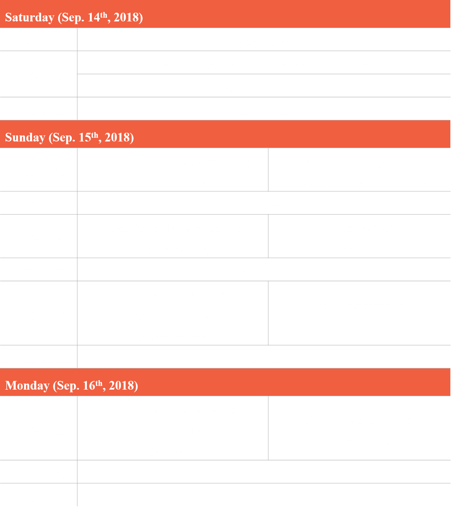

The 5th China-Korea Joint Seminar on Sustainable Transportation Systems (CKJSSTS) is the gathering of leading researchers in the field of transportation from China and South Korea. The purpose of this seminar is to share the innovative ideas and cutting-edge knowledge for transportation research; and to establish a foundation for collaborative research between two countries.
MoreUrban areas where a large portion of population reside have an extremely important linkage to transportation, the purpose of which is to move people and goods between distant locations. However, some of the negative side effects (causing unbearable damage) have arisen in transportation-related sources. Therefore, during the past two decades, there has been a movement within transportation planning, policy, and technology toward a new paradigm, i.e., the paradigm of sustainable transportation. This paradigm seeks to develop and maintain transportation systems that do more than simply enable people and goods to move from one place to another but rather to accomplish this end while causing far less damage. Despite the movement and the extensive efforts that have been expended over the decades, the stated objective cannot be achieved readily without substantial and structural improvements in transportation systems.
Current transportation systems are spatiotemporally interfaced with multiple transportation modes that have been developed over a long period of time. As more transportation modes with different performance characteristics are introduced, the structure and network of the transportation system becomes more complicated. Consequently, reforming current transportation systems toward sustainability also requires a complex and challenging approach from various aspects. To accomplish this, three key aspects that can shape a transportation system, i.e., technology, policy, and planning, must function cooperatively.
To provide a promising solutions for sustainable transportation systems, the engineers and scientists from China and Korea discuss the recent research findings and the future direction for the study of sustainable transportation systems. This will be a valuable opportunity for academic communities in both countries facing tough challenges of reducing the negative impact of transportation on the society, environment and economy, as well as discovering rapid innovative solutions through breakthrough research.
This China-Korea Joint Seminar on Sustainable Transportation Systems was successfully held four times in Korea and China. The 1st and 3rd seminars were held in Seoul and Jeju, Korea, respectively and the 2nd and 4th seminars were held in Beijing and Shanghai, China. Especially, papers presented in the 2nd seminar have been published as a special issue in the International Journal of Transportation. Also, China Daily Newspaper published an article about the 2nd China-Korea Joint Seminar on Sustainable Transportation Systems on March, 2013 as attached below.
To deal with the key issues for sustainable transportation systems,
the seminar will cover five major research areas with a special focus on transportation network.
■ Transportation Networks
■ Artificial Intelligence in Transportation
■ Eco-mobility System
■ Public Transportation
■ Traffic Injury and Prevention
The steering committee will be organized and led by the organizers of both countries. The committee members are:
● Korean Organizer: Prof. Kitae Jang
● Chinese Organizer: Prof. Ying-En Ge
● Founding Organizers of the Seminar: Prof. Seungmo Kang and Prof. Meng Xu
● Chair of young scholar committee in Korean Society of Transportation (KST): Prof. Dongmin Lee
● Two more committee members
Although Prof. Kitae Jang and Prof. Ying-En Ge, will be in charge of organizing the seminar, the committee will discuss the detail plans for scheduling program, inviting/selecting presentations, promoting participations, publishing special issues in major journals.
In the last meeting (at the 4th CKJSSTS) in 2017, the committee of CKJSSTS set the tentative direction of inviting and selecting presentations will invite leading transportation research in both countries.
■ Inviting leading transportation research from both countries:
the committee will call for extended abstracts, and carefully review and select abstracts
■ Giving opportunities for young scholars:
the chair of young scholar committee in KST will be invited, and presentation opportunities will be given to young professionals such as assistant professors in transportation communities.
■ Recommending good abstracts for publication in special issues in major journals:
the committee will select good presentations/abstract and invite full papers that will be reviewed in special issue(s) in major journals. The committee is now discussing the editor of International Journal of Sustainable Transportation (indexed in social science citation index), which is the international journal of KST.
There will be 30 presentations (15 presentations from each country) and two keynote lectures over 3 days. The tentative program schedule is as follows.

The seminar is scheduled to be held alongside with the fall annual meeting of KST (Sep. 13~14, 2018), which is the largest meeting of Korean transportation researchers. Thus, for the Korean transportation community, the seminar can provide presentations of leading research and cutting-edge knowledge from both countries. On the other hand, the larger group of audience will boost participation.
We are planning to invite world-leading researchers in the field of transportation as keynote speakers. This invitation can provide additional opportunities for sharing state-of-art research in both China and Korea with leading scholars as well as learning forefront research topics. Furthermore, the presentations can encourage other researchers active participation.
Korea Advanced Institute of Science and Technology, KAIST
N22 #206, Daehak-ro 291, Yuseong-gu, Daejeon 34141, Republic of Korea
+82-42-350-1264


{kind=link}
{kind=link}